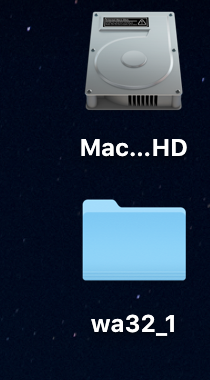
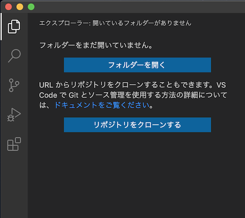
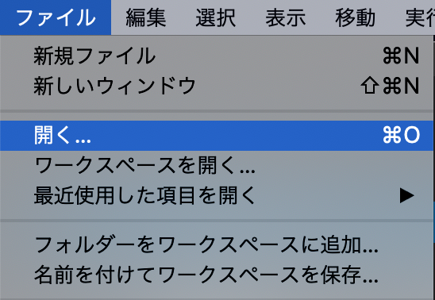
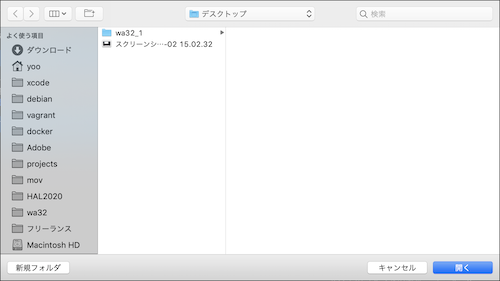
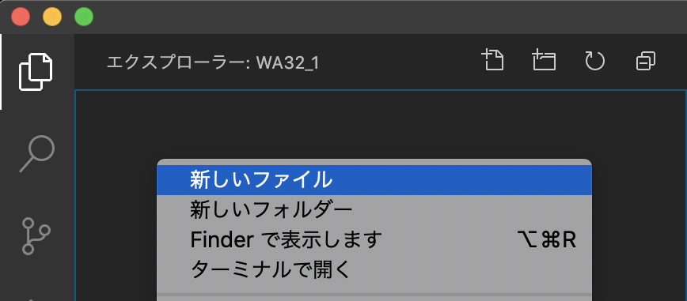
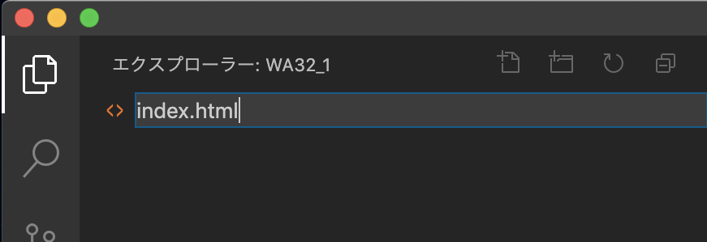
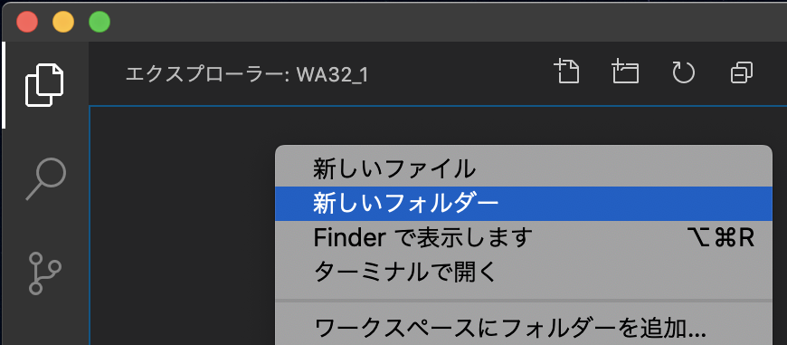
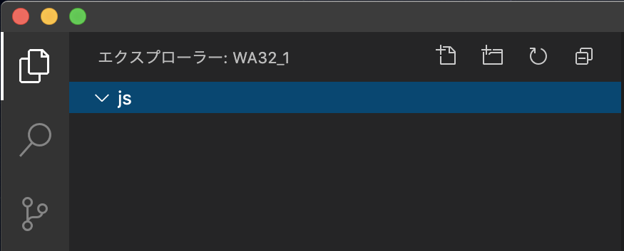
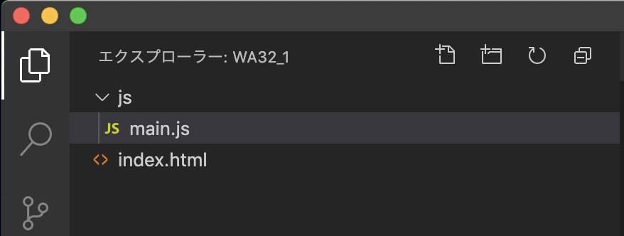

プロジェクト作成
プロジェクトディレクトリ作成
1) 任意の場所に、プロジェクトディレクトリを作成

2) VSCodeを起動
3) エクスプローラーから「フォルダを開く...」もしくは、メニューから「開く...」を選択


4) プロジェクトディレクトリを選択

5) Exproler を右クリックし「新しいファイル」を選択

6) 「index.html」 ファイルを作成

7) Exproler を右クリックし「新しいフォルダー」を選択

8) 「js」 ディレクトリを作成

9) 「main.js」 ファイルを「js/」に作成
